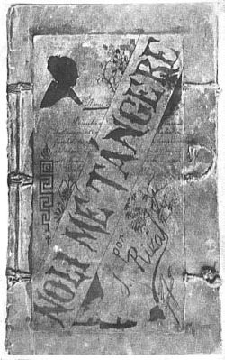
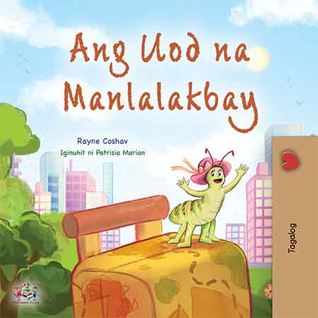
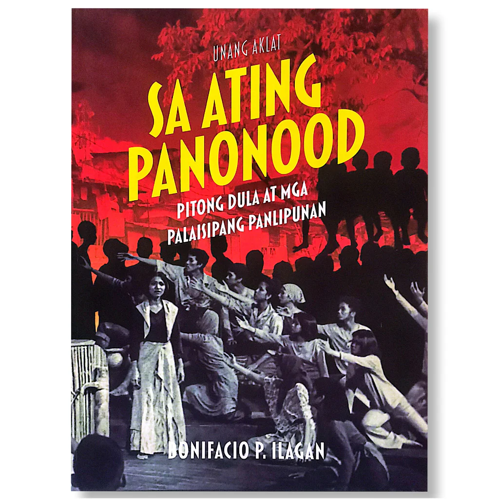
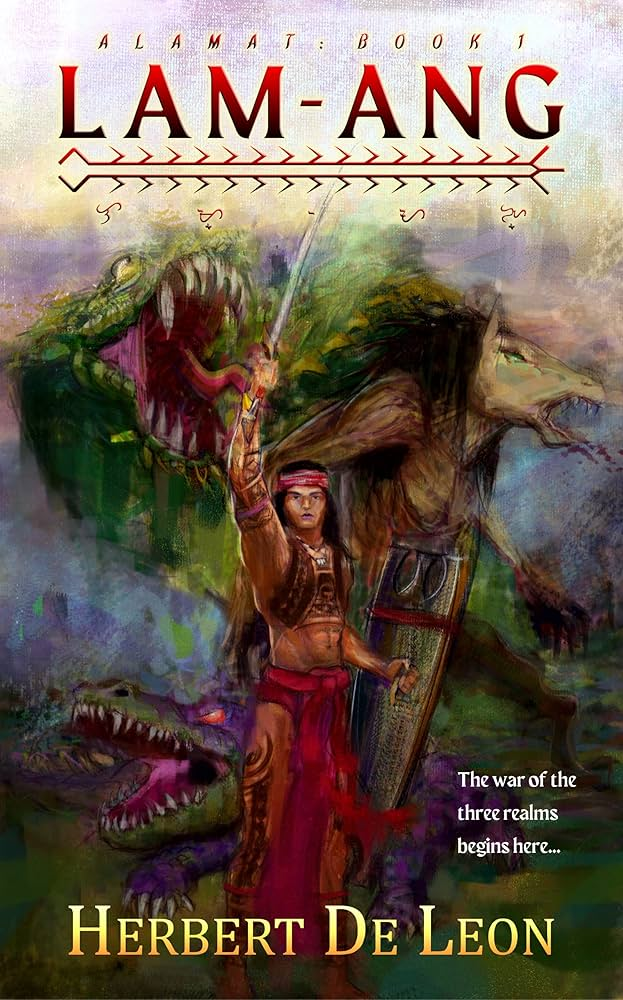
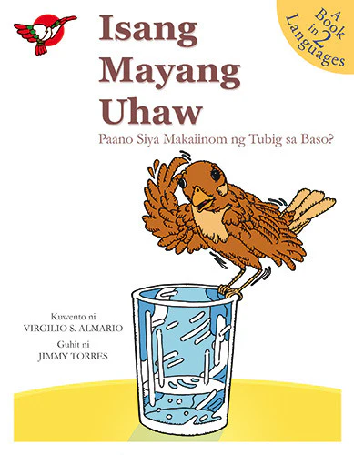
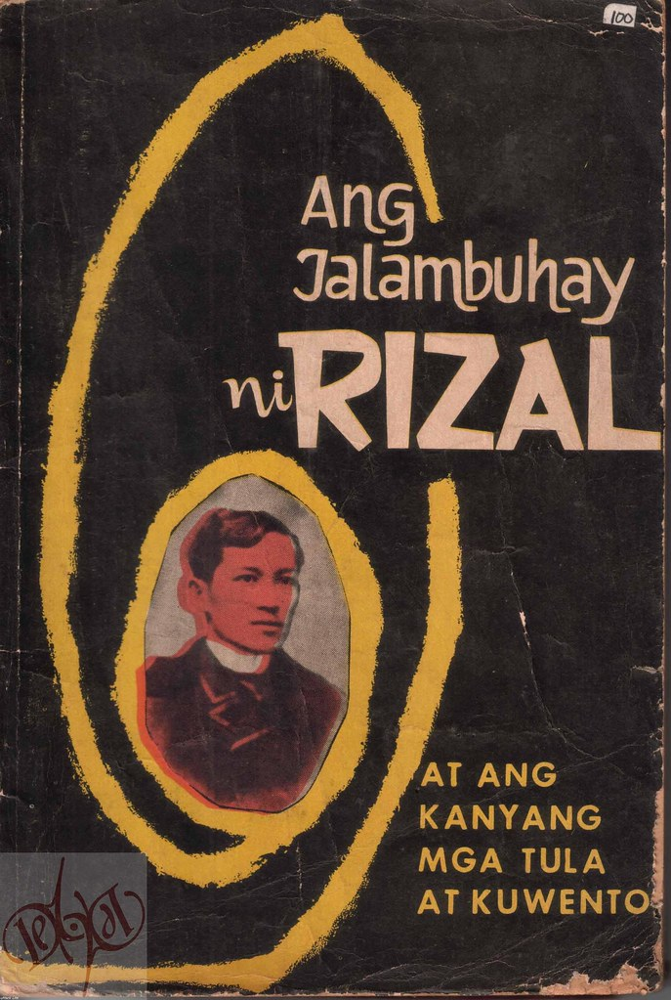
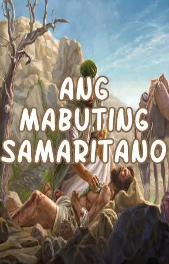

Nobela
Isang mahabang kathang-isip na binubuo ng maraming kabanata.
Halimbawa ng Nobela

Estruktura: Panimula, Tunggalian, Kasukdulan, Kakalasan, at Wakas (binubuo ng maraming kabanata).
Maikling Kuwento
Isang maikling akda na naglalahad ng isang natatanging pangyayari.

Estruktura: Simula, Saglit na Kasiglahan, Tunggalian, Kasukdulan, Kakalasan, at Wakas
Dula
Isang akdang isinulat upang itanghal sa entablado.

Estruktura: Yugto (Acts), Tanghal (Scenes), at mga Diyalogo.
Alamat
Mga kuwentong nagpapaliwanag ng pinagmulan ng isang bagay.

Estruktura: Simula (pagpapakilala), Gitna (pinagmulan ng paksa), at Wakas (pagtatapos ng kuwento).
Pabula
Mga kuwentong tauhang hayop na may aral.

Estruktura: Simula (pagpapakilala sa hayop), Gitna (suliranin), Wakas (resolusyon at aral).
Sanaysay
Isang pagpapahayag ng kuro-kuro o damdamin ng may-akda.
Estruktura: Simula, Gitna, Wakas. Karaniwang nilalahad ang opinion o damdamin ng may-akda.
Talambuhay
Kasaysayan ng buhay ng isang tao.

Estruktura: Kapanganakan, Pag-aaral/Pagkilos, Mga Nakamit/Kontribusyon, at Kamatayan (o kasalukuyang katayuan).
Balita
Isang uri ng tuluyan na nag-uulat ng kasalukuyang pangyayari.
Estruktura: Pamagat (Headline), Lead (Sino, Ano, Saan, Kailan, Bakit, Paano), at Katawan (detalye).
Parabula
Maikling kuwento na nagtuturo ng moral na aral.

Estruktura: Simula (sitwasyon), Gitna (talinghaga), at Wakas (aral/pilosopiya).